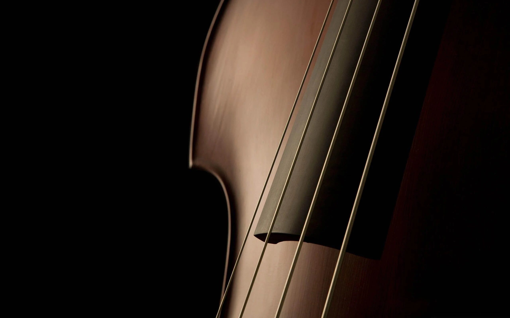
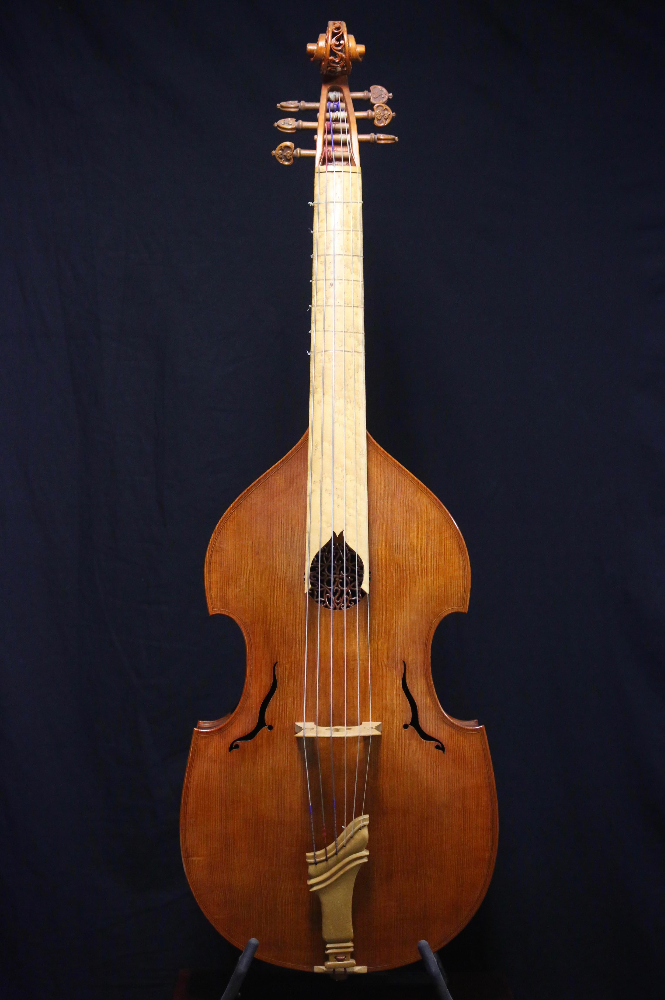
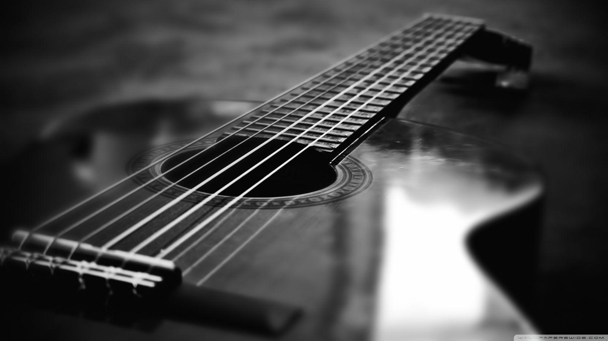

Música por músicos
Home
Inicio
Boletín
Final
Cuerda
Percusión
Viento
Los intrsumentos de cuerda están reguapos tronko. Quiero decir. Es una cuerda que hace musica macho. Es la mejor utilidad que podrías darle a una aparte de para quitarte la vida.
Tipos de instrumentos de cuerda
Cuerda frotada
Cuerda pulsada
Percutida
Con trastes
Sin mastil y sin teclado
Sin mástil con teclado
Con teclado
Sin trastes
Con mástil y sin trastes
Con mástil y con trastes
Sin teclado
Un ejemplo de instrumento de cuerda sin trastes sería por ejemplo una viola. Estos instrumentos generan el sonido cuando se "frotan" sus cuerdas con un "arco". Generan un sonido más constante.
 
❮
❯

Los instrumentos de cuerda pulsada, en cambio, a pesar de funcionar de una manera similar a los instrumentos de cuerda, se tocan de manera diferente. Las cuerdas, en este caso, son "pellizcadas" por los dedos para hacerlas vibrar y así producir música.
Los instrumentos de cuerdas percutidas son de cuerdas que se golpean o percuten. un buen ejemplo de esto es el piano, que genera el sonido mediante unos "martillos" que golpean unas cuerdas que se encuentran en el interior del mismo y que resuenan a través de todo el cuerpo del mismo provocando así un sonido envolvente.